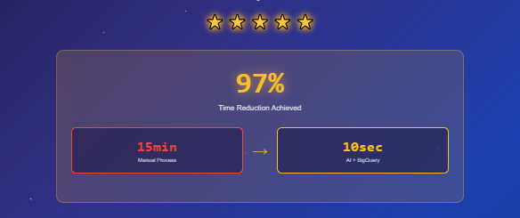
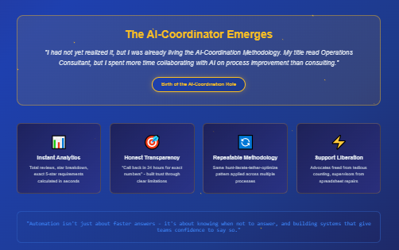

At Thumbtack, one of the quieter but constant drains on support time came from pros asking the same question:
“How many five-star reviews do I need to reach X score?”
It wasn’t the top driver like refunds, but it was still a major time eater. Each request could consume 10–15 minutes of an advocate’s day — and those minutes added up.
In this article you'll learn
- How review score requests consumed valuable support time.
- How AI was first used to build a locked-down Excel sheet to prevent human error.
- How a BigQuery script reduced manual work from 15 minutes to 10 seconds — a 97%+ reduction.
- Why knowing when not to answer is just as important as answering fast.
- How the AI-Coordination Methodology scales across different processes.
The old way
The old process was tedious and error-prone. To answer that simple question, here’s what a support advocate had to do:
- Navigate to the pro’s page and switch to customer view.
- Open the reviews tab.
- Manually count every 1-star, 2-star, 3-star, and 4-star review.
- Assume the rest were 5-star reviews.
- Transfer all of that information into a shared Google Sheet.
- Wait for the spreadsheet formula to calculate how many additional 5-star reviews were needed.
This process “worked” — but only when the spreadsheet wasn’t broken. And every week, someone inevitably entered data into the wrong field or edited where they shouldn’t. That single mistake would throw off the entire system and force supervisors like me to stop what we were doing and repair the sheet.
It was a fragile workflow. It wasted time, frustrated advocates, and risked giving pros inconsistent answers.
Step one: Locking it down
This was early in my AI journey, before I had even touched BigQuery. I asked myself: What if I could at least stop the sheet from breaking?
It wasn’t technically my job role, but it was a problem I knew I could fix. With an AI co-pilot, I built a simple Excel script that locked down the Google Sheet so only the necessary fields could be edited.
- Advocates could enter the data they needed.
- Every other cell was protected.
- The formulas stayed intact.
Support rejoiced. The constant break-fix cycle ended overnight.
Still, the process itself was too slow. Even with a stable sheet, each calculation still took 10–15 minutes of manual work.
Step two: Enter BigQuery
After my breakthrough with refund automation, I realized something: If BigQuery could calculate refunds instantly, why couldn’t it calculate reviews?
So I fired up ChatGPT again. I didn’t have SQL training. I wasn’t a data engineer. But I had the process down:
- Ask the AI where to look.
- Dive into the directories.
- Screenshot. Test. Fail. Refine.
- Keep going until I found the right source data.
This time, I moved faster. Within 30 minutes, I had a working BigQuery query that could do in seconds what had previously taken advocates a quarter of an hour.
I had not yet realized it, but I was already living the AI-Coordination Methodology and my work would lead to the next AI-driven project. Then the next. My title read as an Operations Consultant, but I spent more time collaborating with AI on process improvement than I did consulting after a while.
This was the start of a role most companies need, but don't yet realize: The AI-Coordinator. A role designed to work between each department, optimizing their processes and developing new tools and training material through partnership with an AI Co-Pilot.
The output
The query was lightweight, efficient, and simple to use. All it required was:
- One copy-paste of the script
- One copy-paste of the user ID
- One target review score (for example: 4.9, 4.7, etc.)
The output included:
- Total number of reviews
- Breakdown of reviews by star rating (1–5 stars)
- Exact number of new 5-star reviews required to reach the target score
There was one limitation: BigQuery couldn’t detect reviews posted in the last 24 hours. But instead of a weakness, this became a strength. Advocates could now confidently tell pros:
“We can’t give you a precise number yet. Call back after 24 hours and we’ll deliver an accurate calculation.”
This shifted the dynamic. Advocates didn’t have to guess. They didn’t have to stall. They could set clear, accurate expectations — and pros trusted the process more as a result.

The impact
The results were dramatic. What used to take 10–15 minutes of tedious counting and spreadsheet gymnastics was reduced to 10 seconds.
Copy script
Paste user ID
Enter desired review score
Done
Support advocates were ecstatic. Supervisors were freed from the weekly cycle of spreadsheet repairs. Customers got faster, more consistent answers — and when the data wasn’t yet available, they got honest timelines instead of vague promises.
The lesson
The lesson here wasn’t just about reviews. It was about repeatability.
From refunds to reviews, the pattern was clear:
- Identify friction in the process.
- Use AI as a co-pilot to navigate and iterate.
- Tether the right data sources together.
- Deliver a lightweight query that does in seconds what used to take minutes.
And this time, there was an added dimension: automation isn’t just about faster answers. It’s also about knowing when not to answer, and building systems that give teams the confidence to say so.
That’s the heart of the AI-Coordination Methodology: override reality with results, even when the tools or training aren’t “yours” on paper.
How I did it — and you can too
I wasn’t hired to write SQL. I wasn’t trained as a data engineer. But with AI as my co-pilot, I built a solution in 30 minutes that turned a 15-minute, error-prone workflow into a 10-second calculation — with built-in clarity for when data wasn’t ready.
That’s the reality override of AI coordination: when the system says “this takes 15 minutes,” you say “no, it takes 10 seconds — or 24 hours if you want it exact.”
And you can do the same.
